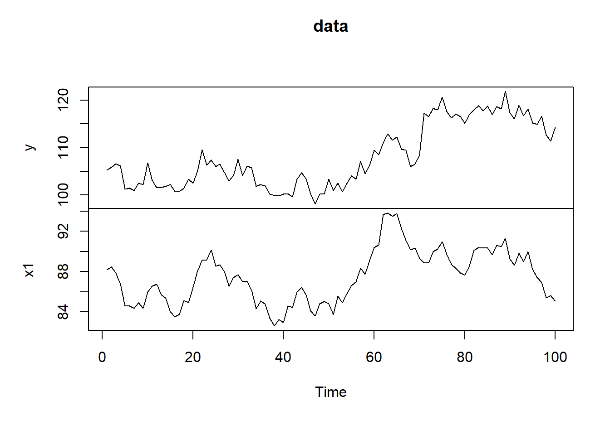
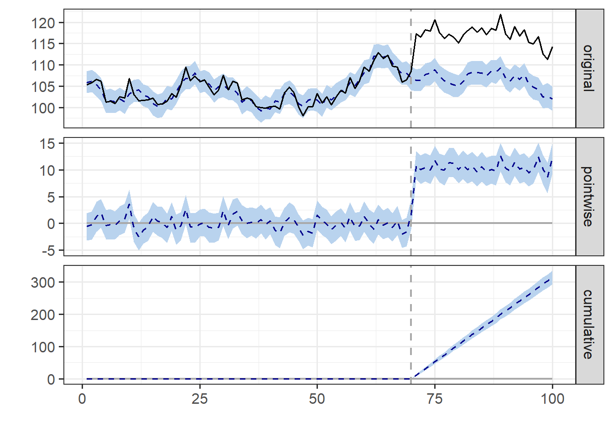
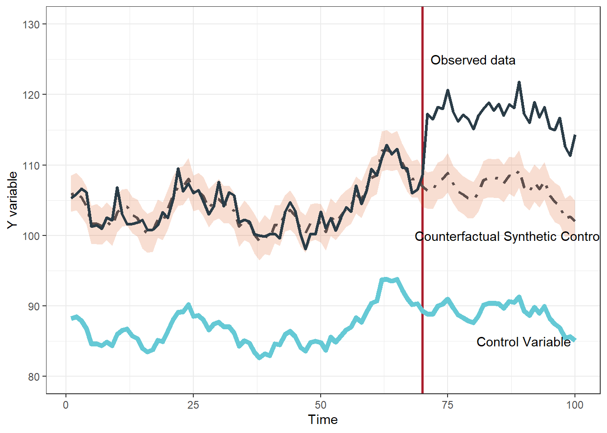

library(CausalImpact) # R package for determining
library(dplyr) # R package for data wrangling
library(ggplot2) # R package for plotting
library(gt) # R package for constructing tables
#.libPaths()3 Time series causal impact with CausalImpact
4 Load libraries
5 Simulate synthetic control data and focal time series data
Following this tutorial: https://google.github.io/CausalImpact/CausalImpact.html
set.seed(1)
x1 <- 100 + arima.sim(model = list(ar = 0.999), n = 100) # createa control variable
y <- 1.2 * x1 + rnorm(100) # create the quality metric variable that is dependent on x1 (control variable)
y[71:100] <- y[71:100] + 10
data <- cbind(y, x1) # combine the datasets
plot(data) # plot the datasets, roughly
6 What the simulated data look like:
#let's see what the data look like
head(round(tibble(y1=data[,1],x1=data[,2]),1),6)|>
gt()| y1 | x1 |
|---|---|
| 105.3 | 88.2 |
| 105.9 | 88.5 |
| 106.6 | 87.9 |
| 106.2 | 86.8 |
| 101.3 | 84.6 |
| 101.4 | 84.6 |
7 Run analysis
pre<-c(1,70) # set the pre period with no intervention
post<-c(71,100) # set the post period, after the intervention
impact<-CausalImpact(data,pre,post) # Conduct the analysis
plot(impact) # plot the results
#summary(impact,"report")8 Analysis report from the R package
Analysis report {CausalImpact}
During the post-intervention period, the response variable had an average value of approx. 117.05. By contrast, in the absence of an intervention, we would have expected an average response of 106.54. The 95% interval of this counterfactual prediction is [105.84, 107.29]. Subtracting this prediction from the observed response yields an estimate of the causal effect the intervention had on the response variable. This effect is 10.51 with a 95% interval of [9.76, 11.21]. For a discussion of the significance of this effect, see below.
Summing up the individual data points during the post-intervention period (which can only sometimes be meaningfully interpreted), the response variable had an overall value of 3.51K. By contrast, had the intervention not taken place, we would have expected a sum of 3.20K. The 95% interval of this prediction is [3.18K, 3.22K].
The above results are given in terms of absolute numbers. In relative terms, the response variable showed an increase of +10%. The 95% interval of this percentage is [+9%, +11%].
This means that the positive effect observed during the intervention period is statistically significant and unlikely to be due to random fluctuations. It should be noted, however, that the question of whether this increase also bears substantive significance can only be answered by comparing the absolute effect (10.51) to the original goal of the underlying intervention.
The probability of obtaining this effect by chance is very small (Bayesian one-sided tail-area probability p = 0.001). This means the causal effect can be considered statistically significant.
8.1 Output table
knitr::kable(t(round(impact$summary,2)))| Average | Cumulative | |
|---|---|---|
| Actual | 117.05 | 3511.46 |
| Pred | 106.54 | 3196.12 |
| Pred.lower | 105.86 | 3175.73 |
| Pred.upper | 107.27 | 3218.05 |
| Pred.sd | 0.37 | 11.13 |
| AbsEffect | 10.51 | 315.34 |
| AbsEffect.lower | 9.78 | 293.41 |
| AbsEffect.upper | 11.19 | 335.72 |
| AbsEffect.sd | 0.37 | 11.13 |
| RelEffect | 0.10 | 0.10 |
| RelEffect.lower | 0.09 | 0.09 |
| RelEffect.upper | 0.11 | 0.11 |
| RelEffect.sd | 0.00 | 0.00 |
| alpha | 0.05 | 0.05 |
| p | 0.00 | 0.00 |
9 stylized figure
#splitting out datasets
#names(impact$series)
orig<-impact$series|>
data.frame()|>
tibble()|>
dplyr::select(response,point.pred,point.pred.lower,point.pred.upper)
cf<-ggplot(orig,aes(x=seq(1,100,1),y=point.pred))+geom_vline(xintercept=70,colour='#AA1E2D',lwd=1)+geom_line(linetype="dotdash",linewidth=1.2,colour='#404C58')+geom_ribbon(aes(ymax=point.pred.upper,ymin=point.pred.lower),fill= '#DC5C1D',alpha=.2)+geom_line(aes(y=response),linewidth=1.2,colour='#2A3C47')+theme_bw()+ylab("Y variable")+xlab("Time")+geom_line(aes(y=x1),colour='#65C9D5',linewidth=2)+scale_y_continuous(limits=c(80,130))+annotate("text",x=c(90,80,87),y=c(85,125,100),label=c("Control Variable","Observed data","Counterfactual Synthetic Control"))
cf
#ggsave(cf,filename="Timeseriesbayesian.png",width=8,height=5,dpi=600,unit="in")
#geom_text(aes(x=c(10,75),y=c(90,125),label=c("Synthetic Control","Observed data")))+
#cf1<-ggplot(orig,aes(x=seq(1,100,1),y=point.pred))+geom_vline(xintercept=70,colour='#AA1E2D',lwd=1)+geom_line(aes(y=response),linewidth=1.2,colour='#2A3C47')+theme_bw()+ylab("Y variable")+xlab("Time")
#cf1
#ggsave(cf1,filename="observed_data_timeseries.png",width=10,height=5,unit="in",dpi=600)
#cf2<-ggplot(orig,aes(x=seq(1,100,1),y=point.pred))+geom_vline(xintercept=70,colour='#AA1E2D',lwd=1)+geom_line(aes(y=response),linewidth=1.2,colour='#2A3C47')+theme_bw()+ylab("Y variable")+xlab("Time")+geom_line(linetype="dotdash",linewidth=1.2,colour='#404C58')+geom_ribbon(aes(ymax=point.pred.upper,ymin=point.pred.lower),fill= '#DC5C1D',alpha=.2)
#cf2
#ggsave(cf2,filename="observed_data_timeseries_with_counterfactual.png",width=10,height=5,unit="in",dpi=600)10 Session Info
sessionInfo()R version 4.5.0 (2025-04-11 ucrt)
Platform: x86_64-w64-mingw32/x64
Running under: Windows 11 x64 (build 26100)
Matrix products: default
LAPACK version 3.12.1
locale:
[1] LC_COLLATE=English_United States.utf8
[2] LC_CTYPE=English_United States.utf8
[3] LC_MONETARY=English_United States.utf8
[4] LC_NUMERIC=C
[5] LC_TIME=English_United States.utf8
time zone: America/New_York
tzcode source: internal
attached base packages:
[1] stats graphics grDevices utils datasets methods base
other attached packages:
[1] gt_1.0.0 ggplot2_3.5.2 dplyr_1.1.4
[4] CausalImpact_1.3.0 bsts_0.9.10 xts_0.14.1
[7] zoo_1.8-14 BoomSpikeSlab_1.2.6 Boom_0.9.15
loaded via a namespace (and not attached):
[1] gtable_0.3.6 jsonlite_2.0.0 compiler_4.5.0 tidyselect_1.2.1
[5] xml2_1.3.8 assertthat_0.2.1 scales_1.3.0 yaml_2.3.10
[9] fastmap_1.2.0 lattice_0.22-6 R6_2.6.1 labeling_0.4.3
[13] generics_0.1.3 knitr_1.50 htmlwidgets_1.6.4 MASS_7.3-65
[17] tibble_3.2.1 munsell_0.5.1 pillar_1.10.2 rlang_1.1.6
[21] xfun_0.52 sass_0.4.10 cli_3.6.4 withr_3.0.2
[25] magrittr_2.0.3 digest_0.6.37 grid_4.5.0 lifecycle_1.0.4
[29] vctrs_0.6.5 evaluate_1.0.3 glue_1.8.0 farver_2.1.2
[33] colorspace_2.1-1 rmarkdown_2.29 tools_4.5.0 pkgconfig_2.0.3
[37] htmltools_0.5.8.1